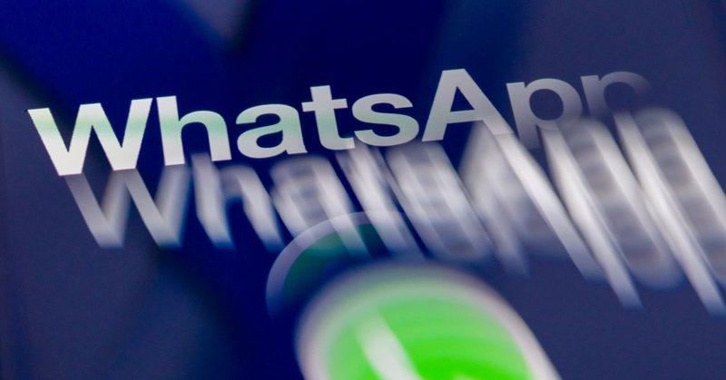
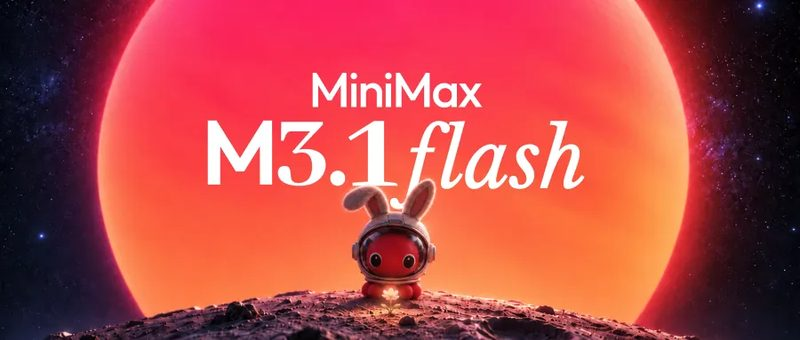
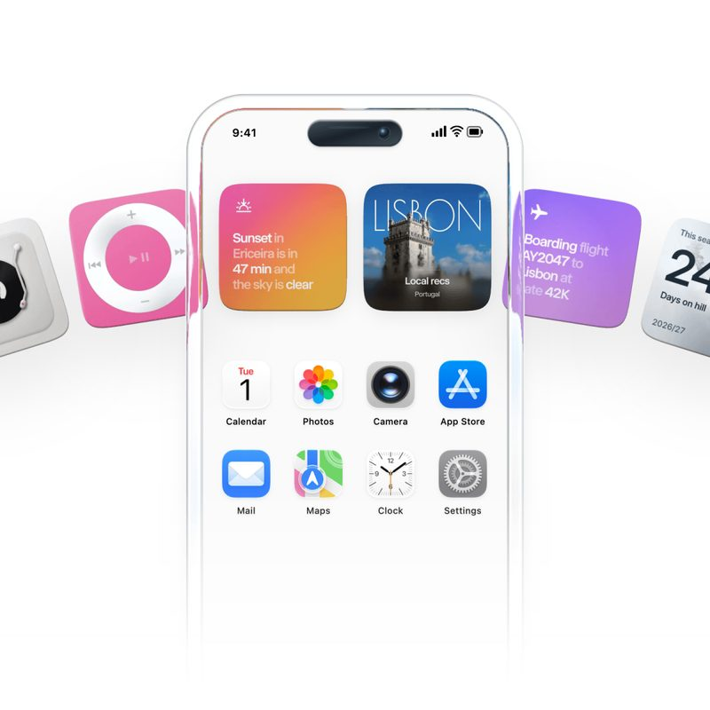
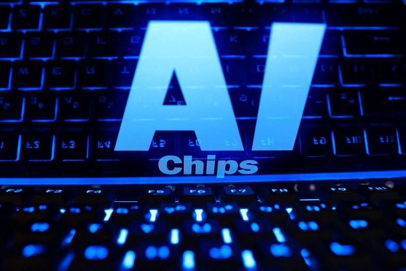
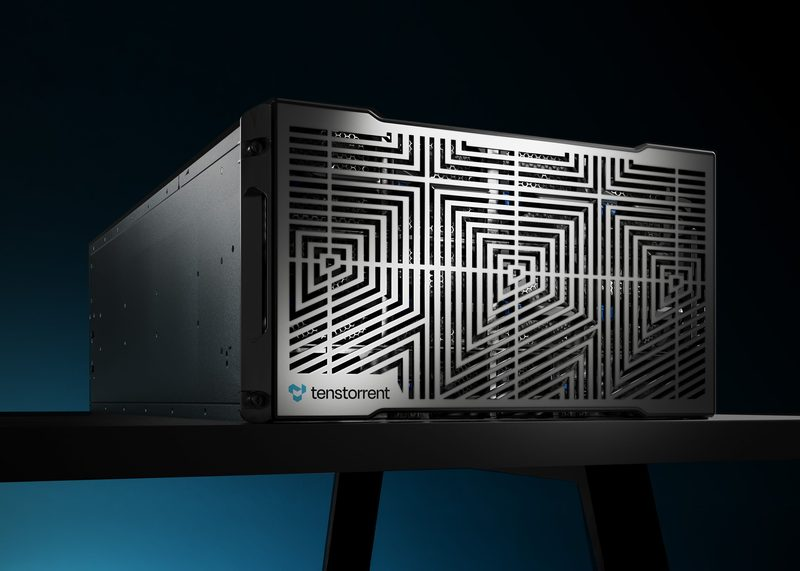

📋 今天 8 則 WhatsApp 說明頁意外露出 AI 客服的「禁語清單」 MiniMax M3.1 Flash 上線：便宜又快的 Agent 模型 OpenCode 被駭：使用者的 AI 帳單遭盜刷 Wabi 2.0 全面開放：可以拉家人一起用的 AI 助理 Amazon 推 TorchNeuron：AI 程式免改就能跑自家晶片 Anthropic 拿出 5% 股份成立公益基金 Tenstorrent 募資 15 億美元，估值 62 億 電力不夠：Microsoft 退出英國最大 AI 資料中心案 
圖：WIRED／Getty Images 新聞 #1 WhatsApp 說明頁意外露出 AI 客服的「禁語清單」 WIRED 報導，隱私公司 Redact 發現約 80 個 WhatsApp 說明／FAQ 網頁的原始碼裡，藏著給 Meta AI 客服的指令，其中一段標題就是「WHAT NOT TO SAY」。例如「如何刪除帳號」頁面要求 AI 不要建議使用者去找資料保護機關或主管機關，也不要解讀服務條款、隱私政策或 GDPR 等法規。Meta 表示是 bug 造成外露，已全部移除。
💡 跟你有什麼關係： 你問企業的 AI 客服時，它背後可能被設定成不回答某些問題，尤其是權益、法律相關的。遇到個資、申訴、退款這類事情，別只靠 AI 客服的回答，要自己看官方條款或找主管機關。
⚠️ Meta 說這些是給 AI 客服的內部指示、不是直接給使用者看的；外露多久、其他 AI 能不能讀到，報導中仍不清楚。
📰 原始來源：WIRED（2026-10-19） ↗ 
圖：MiniMax 官方 新上線 #2 MiniMax M3.1 Flash 上線：便宜又快的 Agent 模型 中國 AI 公司 MiniMax 10/19 正式推出 M3.1 Flash，並證實先前在 OpenRouter 匿名爆紅的「Space Bunny」就是它的早期版本，匿名期間處理超過 200 兆 tokens。官方表示線上推論快了將近 3 倍，Agent 任務的使用成本比前一代低 70%，API 每百萬 tokens 輸入 0.15 美元、輸出 0.60 美元。
💡 跟你有什麼關係： 「夠用又便宜」的模型越來越多，用它們做的 AI App、工具，訂閱價有機會再往下降。一般人目前不用特別去換，但可以留意常用工具是否改用更便宜的模型。
⚠️ 測驗成績都是官方自己公布的，還沒有第三方驗證；模型權重官方說「之後才開放」。
📰 原始來源：MiniMax 官方部落格（2026-10-19） ↗ 圖：TechCrunch／Getty Images 新聞 #3 OpenCode 被駭：使用者的 AI 帳單遭盜刷 開源 AI 寫程式工具 OpenCode 的線上平台 Console 遭入侵，影響 1.4% 使用者；存放在 Console 的 OpenAI、Anthropic、Google API 金鑰被拿去大量使用，有人被刷數百美元，少數超過 1,000 美元。Anthropic、Google 已封鎖疑似外洩的金鑰，OpenAI 協助恢復存取並退回被盜用的額度，OpenCode 表示退款處理中。
💡 跟你有什麼關係： 只要把 AI 服務的金鑰（API key）交給第三方平台保管，就有被盜刷的風險。用這類工具記得設定花費上限和用量通知；一旦外洩，要到原廠後台撤銷金鑰、重新產生。
⚠️ OpenCode 本機 App 和命令列工具不受影響；入侵途徑、金鑰怎麼保存，官方尚未說明，事件仍在處理中。
📰 原始來源：TechCrunch（2026-10-19） ↗ 
圖：Wabi（via TechCrunch） 新上線 #4 Wabi 2.0 全面開放：可以拉家人一起用的 AI 助理 Replika 創辦人 Eugenia Kuyda 的新公司 Wabi 10/19 對所有人開放：外觀像通訊軟體，可以依主題開不同對話串（例如健康、小孩），AI 會在對話串裡自動做出小 App，像體重紀錄、小孩活動行事曆。對話串能分享成群組，讓伴侶或保母一起看；目前免費，商業模式未定。
💡 跟你有什麼關係： AI 助理開始從「一個人對著聊天框」變成「全家共用」，小孩課表、聚餐安排可以放在同一個地方。但它會連接 email、行事曆等私人資料，分享到群組前要想清楚哪些資訊會被別人看到。
⚠️ 報導沒有提到台灣是否能使用、是否支援中文；資料主要存在美國。
📰 原始來源：TechCrunch（2026-10-19） ↗ 
圖：Reuters（via Investing.com） 工具 #5 Amazon 推 TorchNeuron：AI 程式免改就能跑自家晶片 路透報導，Amazon 晶片部門 Annapurna Labs 推出 TorchNeuron，用 PyTorch 寫的 AI 程式只要改一個設定，就能在 Amazon 自研的 Trainium 晶片上執行，不必重寫，之後會免費開源。已有 30 多家早期客戶在用，消息公布當天 Amazon 股價早盤上漲約 5%。
💡 跟你有什麼關係： Nvidia 能稱霸，很大原因是開發者都習慣它的軟體（CUDA）。換晶片的門檻變低，AI 運算成本就有機會下降，長期可能反映在你用的 AI 服務價格上。
⚠️ 「可以大幅省錢」是 Amazon 主管的說法，實際效能與價差要看之後的公開測試。
📰 原始來源：Reuters（經 Investing.com，2026-10-19） ↗ 圖：Anthropic 官方 觀點 #6 Anthropic 拿出 5% 股份成立公益基金 Claude 的開發商 Anthropic 10/18 宣布成立「Anthropic Public Benefit Fund」，經股東同意後先投入 5% 股份；公司價值每比基準成長 50%，董事會可再加碼 2%。官方舉例可用在 AI 對就業的衝擊等議題，並承諾這些股份不用於遊說或政治獻金。
💡 跟你有什麼關係： AI 公司開始正面回應「AI 會不會搶工作」的社會問題。對一般人來說，未來可能出現由 AI 公司出資的轉職、補助類計畫，值得持續留意。
⚠️ 基金怎麼治理、錢會怎麼花，官方說「未來幾個月」才公布，目前仍只是承諾。
📰 原始來源：Anthropic 官方公告（2026-10-18） ↗ 
圖：Tenstorrent 官方 資金 #7 Tenstorrent 募資 15 億美元，估值 62 億 由知名晶片設計師 Jim Keller（曾參與蘋果 A4/A5、AMD Zen）領軍的 AI 晶片公司 Tenstorrent 10/19 宣布完成 15 億美元 E 輪募資，投後估值 62 億美元，投資人包括 Fidelity、ARK Invest、Morgan Stanley、Sandisk 等。資金將用來大量部署 Galaxy 伺服器，主攻開放權重模型與影片生成，並繼續授權 RISC-V 處理器設計給三星、LG 等公司。
💡 跟你有什麼關係： 越來越多資金押注「Nvidia 以外的選擇」。AI 晶片供應越多元，AI 服務的成本和供貨穩定度都可能受惠。
📰 原始來源：Tenstorrent 官方新聞稿（2026-10-19） ↗ 圖：Nscale（via BBC News） 新聞 #8 電力不夠：Microsoft 退出英國最大 AI 資料中心案 BBC 報導，Microsoft 退出 Nscale 在英國艾塞克斯 Loughton 規劃的 20 億英鎊 AI 資料中心案；原因是電網通知供電要延到 2030 年代，而不是原定的今年底。Nscale 表示仍會繼續建設、尋找替代電源，和 Microsoft 在挪威、葡萄牙、美國的合作不受影響。
💡 跟你有什麼關係： AI 的瓶頸已經從晶片延伸到「電」。各國都在面對 AI 用電需求，電力夠不夠會影響 AI 服務能多快擴充。
⚠️ Microsoft 對此不予置評，退出原因來自 BBC 與 Telegraph 的報導。
📰 原始來源：BBC News（2026-10-18） ↗ ✅ 今天可以做： 有在用 ChatGPT、Claude、Gemini 等付費 API 或 AI 工具的話，今天花 2 分鐘到後台設定「每月花費上限」和用量通知，金鑰外洩時才不會被刷爆。
🗂️ 過去 14 天